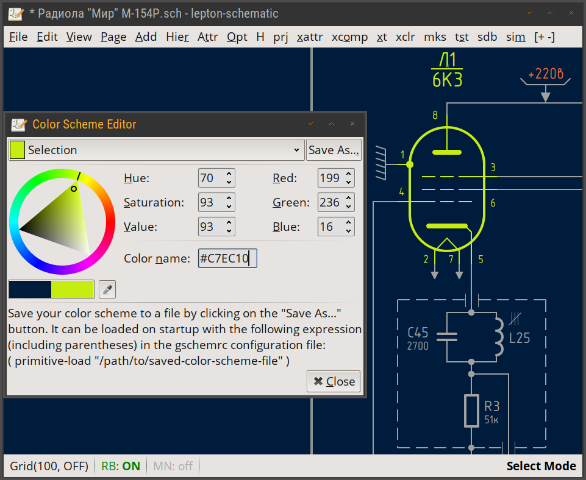
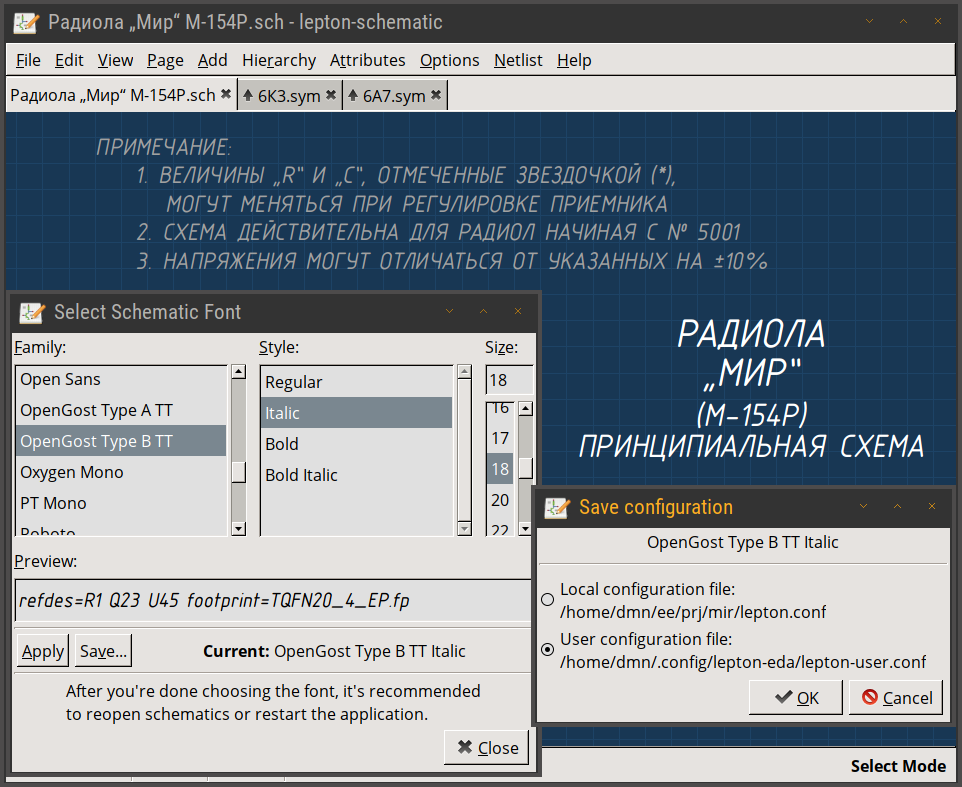

The classic screenshot: lightning detector example schematic, dark color scheme.

lepton-schematic 1.9.8 under CYGWIN on Windows 7:
(posted on geda-user mailing list 30/09/2019)
lepton-schematic 1.9.9:
The classic screenshot: lightning detector
example schematic, dark color scheme.
Add component dialog:
Working with symbol libraries: searchable tree of available symbols,
preview, a list of current component's attributes
(configurable: schematic.library::component-attributes).
The "In Use" tab lists symbols already added to the schematic.
Attributes editor:
Examine, modify, add/remove attributes of the selected component.
Change visibility: show name, value or both; hide them.
Inherited attributes (grayed out) are those available inside
a symbol file. You can right click->Promote them,
i.e. add to the schematic.

Page manager:
Show opened schematic files. Examine parent/child relationship
of hierarchical schematics, as well as schematics and symbols.
Open and close pages, switch between them.

Color scheme editor:
Design your own color scheme.
Choose the color you want to edit from the drop-down box,
e.g. background, graphics or text.
Whenever controls in the editor are adjusted, it is
immediately reflected in the schematic.
Save the color scheme and load it on startup from the
gschemrc
configuration file.
See also the Color Schemes
page at graahnul-grom.github.io.

Let us slightly adjust the colors. I think it's much better now:
Font selector:
Use Options->Font.. to select a schematic font:
click Apply to see the changes,
permanently save them with Save...
Please note that a font size shown in the font
selection dialog only affects the preview there.
To set the font size adjust the
schematic.gui::text-size configuration parameter.

Why don't you send me screenshots?: